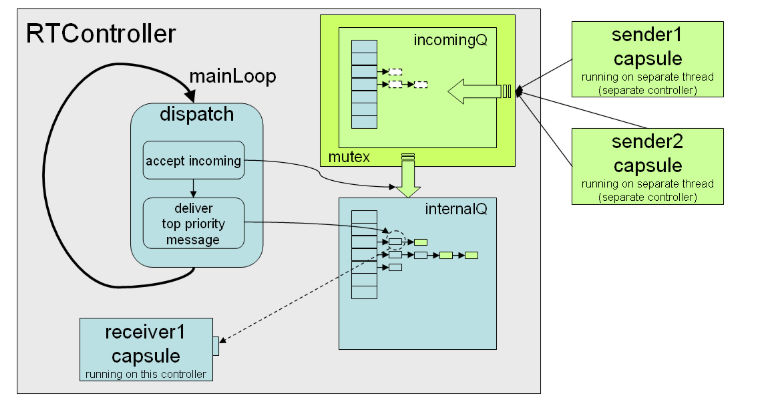
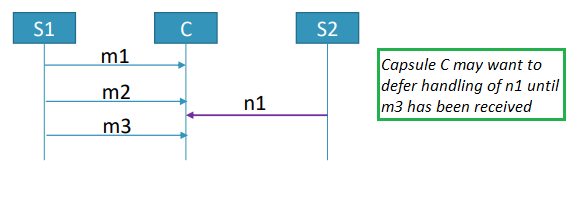
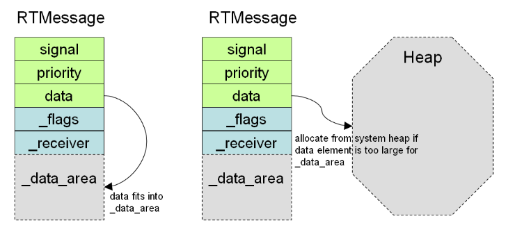

Message Communication
Applications developed with Code RealTime consist of objects with state machines that communicate by means of messages. This chapter describes the details of how this message-based communication is implemented in the TargetRTS.
Controllers and Message Queues
As explained in Threads, an application consists of controllers each of which is run by a physical thread and is managing a group of capsule instances. The main responsibility of a controller is to facilitate the exchange of messages from one capsule instance to another. There are two kinds of message exchange:
- Intra-thread The sender and receiver capsule instances are managed by the same controller, i.e. they execute in the same thread.
- Inter-thread The sender and receiver capsule instances are managed by different controllers, i.e. they execute in different threads.
From the application’s perspective, there is no difference between sending a message within a thread and sending a message across threads; the code to send and receive the message is still the same. There is, however, a difference in performance, and message sending across threads is approximately 10-20 times slower than message sending within a thread. You should therefore assign capsule instances to controllers in a way so that those that communicate frequently with each other should be run by the same controller.
Each physical thread in the TC of an application specifies an implementation class that inherits from RTController. The default implementation is provided by the RTPeerController class, and it implements a simple event loop that in each iteration delivers the most prioritized message to the capsule instance that should handle it. Let's explore what happens internally in the TargetRTS when a capsule sends an event on a port:
myPort.myEvent().send();
- A message object, of type RTMessage, is obtained by the controller that runs the sender capsule instance (see Message Memory Management and Message Representation).
- The sender port instance ("myPort") should at run-time be bound to a receiver port instance, and the capsule instance to which that receiver port instance belongs is the receiver of the message. Note that it's possible for ports to be unbound, and then message sending fails at this point.
-
The message is now delivered to the controller that runs the receiver capsule instance. This is done by calling
RTController::receive(). The controller has two message queues where it stores received messages, the internal queue and the incoming queue. The received message is put in one of these:- If the sender and receiver controller is the same (intra-thread communication) the message is placed in the internal queue.
- If the sender and receiver controllers are different (inter-thread communication) the message is placed in the incoming queue.
Note that both the internal and incoming message queue is actually an array of queues, one for each message priority level. The received message is inserted at the end of the queue that matches the priority of the message as specified by the sender. This ensures that messages are handled in priority order, and, within each level of priority, in a FIFO ("first-in-first-out") manner.
-
If the message was placed in the incoming queue, it gets transferred to the internal queue in the beginning of the
RTController::dispatch()function which is called once in each iteration of the controller's event loop. This happens in the functionRTController::acceptIncoming(). - The rest of the
RTController::dispatch()function checks the contents of the incoming queue, starting with the queue at the highest priority level (Synchronous), proceeding with queues at lower priority levels, until the queue at the lowest priority level (Background). As soon as it encounters a non-empty queue it dispatches the first message of that queue. -
Dispatching a message is done by calling
RTMessage::deliver(), which eventually leads to a call of theRTActor::rtsBehavior()function which implements the capsule state machine in the generated code.Note
The control is not returned to the TargetRTS until the transition which is triggered by the received message has run to completion. This includes the triggered transition itself, and also any number of non-triggered transitions that may follow it. It also includes entry and exit actions for states. It may also involve the call of one or several guard functions that are required for determining which transition that should be triggered. Hence, the dispatching of a single message may lead to execution of several code snippets. Before they have all executed it's not possible for the controller to dispatch another message, and it's therefore important that the code that runs operates as efficiently as possible. A long-running operation should be performed by a capsule instance that runs in a different controller, to avoid blocking the execution of other capsule instances.
-
Finally, when the message has been dispatched, it's freed (see Message Memory Management).
From a code snippet of a capsule, such as a transition effect or guard code, you can get the message that was most recently dispatched to the capsule by accessing RTActor::msg. You should treat this message object, and all data it contains, as read-only. Since it will be freed when control returns to the TargetRTS after the message has been dispatched, it's not safe to store any pointers to the message or the data it contains and access these at a later time. All data from the message object that you need to keep should be copied. However, if the data is big it's possible to instead move it by setting the property const_rtdata on a transition.
The picture below illustrates a controller and how messages arriving from capsule instances are placed in the incoming or the internal queue, depending on if those capsule instances run in the same or a different controller. It also shows how these queues actually are arrays of queues organized according to message priority.

Defer Queue
Sometimes a capsule may be designed to handle certain messages in a sequence. If another unrelated message arrives in the middle of the sequence, and it's not urgent to handle that message right away, it can be useful to defer its handling to a later point in time, when the whole message sequence has arrived. This is especially true if the received message is the beginning of another message sequence (processing multiple message sequences with interleaved parallelism can be tricky).

Messages can be deferred by calling the function RTMessage::defer(). A deferred message is put in the defer queue which is a special message queue located either in the capsule instance, or in the controller that runs the capsule instance (see the TargetRTS setting DEFER_IN_ACTOR). Later, a deferred message can be recalled from the defer queue by calling RTInSignal::recall() (to recall only one deferred message) or RTInSignal::recallAll() (to recall all deferred messages). A recalled message is moved from the defer queue back to the normal message queue, from where it later will be dispatched again to the receiver capsule instance. By default a recalled message is placed at the end of the message queue as any other received message, but you can also choose to put it at the front of the queue (by passing an argument to recall() or recallAll()) in order to handle it before other messages that may have arrived while the message waited in the defer queue. Here is a code example:
msg->defer(); // Defer the currently processed message (usually done early in a transition)
myPort.myEvent().recall(); // Recall one deferred message and put it at the back of the normal message queue
myPort.myEvent().recall(1); // As above but put the recalled message at the front of the message queue instead
myPort.myEvent().recallAll(); // Recall all deferred messages and put them at the back of the normal message queue
recall() will recall the first message from the defer queue, i.e. the one that has been deferred the longest. However, only messages that match the port and event (myPort and myEvent in the above sample) can be recalled. Other messages remain in the defer queue. This is true even when calling recallAll(). You can be even more specific about which message(s) to recall by specifying a port index using the function recallAt() or recallAllAt(). In that case it's required that a recalled message was originally received on the specified port index for it to be recalled.
Sometimes you may have deferred a message that you later decide to ignore. For example, the capsule may have received another message which makes it unnecessary to handle a deferred message. In that case you can remove a deferred message from the defer queue without recalling it. Call the function RTInSignal::purge() to remove all deferred messages that match the port and event, or RTInSignal::purgeAt() to also require that the port index matches.
Note
It's recommended to use the defer queue sparingly, and only when really needed. Deferring and recalling messages can make it harder to follow the application logic. Also make sure not to forget any messages in the defer queue. All messages that are deferred should sooner or later be recalled or purged.
sendCopyToMe()
A simpler and more light-weight alternative to using the defer queue, especially for messages without data, is to defer the handling of a received message by letting a capsule instance send a copy of the received message to itself. This allows a capsule to break down the handling of a message into several transitions, each triggered by another copy of the message. The function to call is RTActor::sendCopyToMe(). Here is an example where this technique is used for deferring the reply message of an invoked event:
RTMessage reply;
myPort.myEvent().invoke(&reply);
sendCopyToMe(&reply);
sendCopyToMe() can be useful whenever a message cannot be fully handled by a single transition. It's similar to deferring a message and then immediately recall it again.
Message Priority
The sender of a message can choose between the following priority levels:
- Panic This is the highest possible priority for user-defined messages. Use this only to handle emergencies.
- High This is a higher than normal priority to be used for high-priority messages.
- General This is the default priority level which is suitable for most messages.
- Low This is a lower than normal priority to be used for low-priority messages.
- Background This is the lowest possible priority. Use this to handle background-type of activities.
In addition to these five priority levels, there are two system-level priorities which are higher than all the above; System and Synchronous. These are used internally by the TargetRTS and cannot be used when sending user-defined messages.
As explained above, each priority level has its own message queue in the controller, and the controller looks for messages to dispatch starting from the queue with the highest priority. As soon as a message is found, it gets dispatched, and no more messages are dispatched in that iteration of the event loop. This means that if a large number of high priority messages are continously sent, they will prevent (or at least delay) dispatching of low priority events in the same controller. It's therefore best to stick to the default message priority for most messages, and only use higher and lower priority messages when really needed.
Message Representation
A message is an instance of a protocol event and is represented by an object of the RTMessage class. It stores the following information:
- A message id (
signal). This is a numerical id that uniquely identifies the event for which the message was created within its protocol. - A data object. It is stored as an untyped pointer (
void*) but can safely be casted to a pointer typed by the parameter of the protocol event. In most cases such casts happen automatically in generated code, so that you can access correctly typed data in a transition function. However, if you get the data from the message object by callingRTMessage::getData()you need to cast it yourself. See Message Data Area for more information about how the message data is stored. - The type descriptor of the data object (an RTObject_class). Access it by calling
RTMessage::getType(). - The priority at which the message was sent. Access it by calling
RTMessage::getPriority(). - The port on which the message was received. Access it by calling
RTMessage::sap(). - The receiver capsule instance. Access it by calling
RTMessage::receiver().
As mentioned above you should treat a message object, and all data it contains, as read-only and owned by the TargetRTS. The data that is passed with the message object is either a copy of the data provided by the sender or was moved from it. This avoids the risk that both the sender and receiver, which may run in different threads, access the same data object simulatenously.
Important
When you develop an application don't make assumptions about how many times the data object will be copied. In many cases it will only be copied once, but there are situations when multiple copies will need to be created. It is therefore important that any event parameter has a type descriptor where the copy function (e.g. a copy constructor) is able to copy the data object multiple times. Note that copying of the message object may happen even after it has been dispatched. The receiver must therefore not change it in a way that will prevent it from later being copied correctly by the TargetRTS.
Message Data Area
Messages that carry data can either store that data inside the RTMessage object, in the _data_area member variable, or on the system heap. A TargetRTS configuration macro RTMESSAGE_PAYLOAD_SIZE defines the byte limit which decides where a data object will be stored. Data that is smaller than this limit is stored inside the RTMessage object, while bigger data is stored on the system heap. The picture below shows two message objects, one where the data object is small enough to fit in the _data_area and another where it's too big to fit there and therefore is instead allocated on the system heap.

As a user you don't need to think about where the message data is placed, because it's still accessed in the same way. However, to obtain optimal performance for the application it's necessary to fine-tune RTMESSAGE_PAYLOAD_SIZE to find the best trade-off between application memory usage and speed.
Message Memory Management
When a capsule instance wants to send a message, its controller first needs to get a new RTMessage object. The controller gets it by calling RTController::newMsg(). The obtained message object will then be given to the controller which manages the receiver capsule instance (which in case of intra-thread communication will be the same controller). That controller inserts the message object into an event queue according to the message priority. When the message has been dispatched to the receiver, the message object is no longer needed and the controller then frees it by calling RTController::freeMsg().
Dynamically allocating and deallocating memory for each individual message object would impact negatively on application performance. The newMsg() and freeMsg() functions therefore use a free list which is a pool of message objects that are "free" to use (meaning that they are currently not involved in any communication). newMsg() obtains the first message of the free list, and freeMsg() returns that message to the beginning of the free list.
There is a single free list in the application and it's implemented by the RTResourceMgr class. At application start-up, when the first message of the application needs to be sent, a block of messages (see RTMessageBlock) is allocated from the heap and added to the free list. Subsequent requests to get a message object can therefore be processed quickly, without the need to allocate memory.
If the application needs to send a large number of messages at a faster pace than they can be dispatched, it can happen that the free list becomes empty. In that case another block of messages get allocated.
The size and behavior of the free list is controlled by a few TargetRTS settings:
- RTMessageBlock::Size Controls how many messages are contained in each message block.
- maxFreeListSize and minFreeListSize Controls how messages are freed by
RTController::freeMsg(). If the size of the free list exceeds maxFreeListSize a number of message blocks are freed to reduce the size of the free list to minFreeListSize. Hence, the size of the free list is always kept in the range defined by these two constants.
Note that freeing a message doesn't deallocate its memory. Instead it is reset by calling RTMessage::clear() so it becomes ready to be used again. This means that the memory occupied by the free list will grow until a certain limit when it's big enough to always contain a free message when the application needs one. That limit is different for different applications, and if you want to avoid dynamic allocation of additional message blocks after application start-up, you may need to adjust the RTMessageBlock::Size constant.
Hint
You can compile the TargetRTS with the RTS_COUNT flag set to collect run-time statistics for your application. Among other things it counts the peek number of messages allocated by each controller. This information can help you configure the free list to have a size that is appropriate for your application.
Example
You can find a sample application that shows how to collect and print statistics here
Unhandled Messages
In a correctly designed application, under normal circumstances, all messages that are dispatched to a capsule instance lead to the triggering of a transition in its state machine. However, in practise it can happen that a dispatched message is not handled, and therefore is "useless". The most common reason when this happens is that you simply forgot to create a transition with a trigger that matches the received event (with a fulfilled guard condition) in each state that can be active when the message is dispatched. During development of an application, when it still is incomplete and may contain bugs, it's therefore fairly common that some dispatched messages are not handled.
As explained above the function RTActor::rtsBehavior() implements the capsule state machine in the generated code, and gets called when a message is dispatched to the capsule instance. If there is no enabled transition for the combination of the currently active state, and the port on which the message was received, the rtsBehavior() function will treat the message as unhandled and make a call to RTActor::unhandledMessage(). In that function two cases are handled:
- The message was not handled because it was dispatched at an early time in the capsule instance's life, when it hasn't yet been fully initialized. More precisely the initial transition has not yet executed, which in turn means that there isn't yet an active state in the state machine. This is a rather unusual situation and it's handled by calling RTActor::
messageReceivedBeforeInitialized()which will save the message in the defer queue. When later the initial transition runs, the message will be recalled from the defer queue and put back into the normal message queue so it once again can be dispatched to the capsule instance. Thereby the message is not lost, and eventually becomes handled (or at least gets another chance to be handled). - The message was not handled because of a missing enabled transition. This is the most common case, especially for applications that are still under development. This situation is handled by calling RTActor::
unexpectedMessage()which will cause an error message to be logged onstderr. See this chapter for more information about this error message and how you can use it for understanding what needs to be fixed in the state machine to handle the message.
Both RTActor::messageReceivedBeforeInitialized() and RTActor::unexpectedMessage() are virtual functions that you can override in your capsule, in case you want to treat unhandled messages in a different way. For example, you can override RTActor::unexpectedMessage() if some of the received messages should not be handled by the capsule state machine, but by some other C++ code.